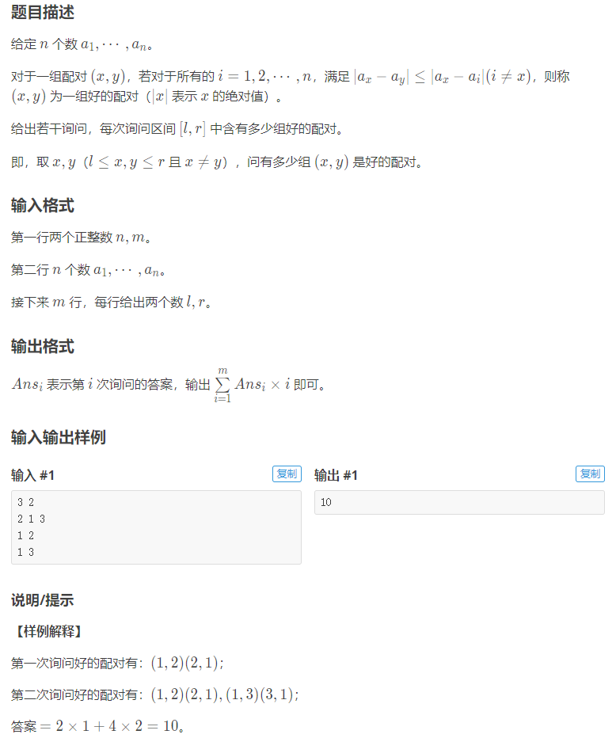
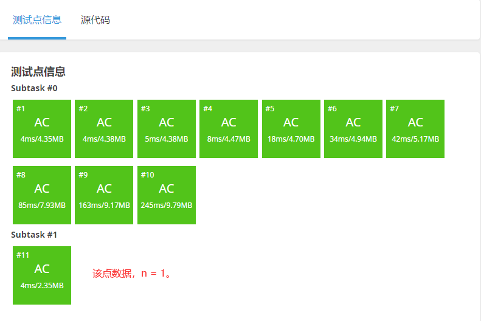

配对统计(GZOI2017)
题目详情

数据范围
- \(1 \le n,m \le 300000\)
- \(1 \le a_i \le 10^9\)
- \(i \ne j,a_i \ne a_j\)
算法与思路
寻找所有好对
首先我们来理解题意：
\(\left\vert a_x-a_y\right\vert \le \left\vert a_x-a_i\right\vert(i\ne x)\) ，就是说 \(a_x\) 和 \(a_y\) 对于 \(a_x\) 是相差最小两个数，放到数轴上就是挨得最近的两个数。
所以就想到了排序，这样每个数可能的好对就是它和它两边的两个数。
举个例子：
编号
排序过后就变成
对应的编号是
对于每一个数，判断一下它与它左右两边的数的差的绝对值：
如果相等，那么就是两个好的配对（左右两边都是好对），以6为例：
\(\left\vert 6-4\right\vert = \left\vert 6-8\right\vert\) \(6\) 和 \(4\) 对应的好对为 \((6,4)\)，\(6\) 和 \(8\) 对应的好对为 \((6,5)\)。
如果不相等，那么只有绝对值之差更小的一对，以 \(4\) 为例：
\(\left\vert 4-3\right\vert < \left\vert 4-6\right\vert\) 只有 \(4\) 和 \(3\) 的好对 \((4,1)\) 。
当然两边的数只有唯一的一对
要注意的是，如果一个配对 \((x,y)\) 是好对， \((y,x)\) 不一定是好对，如9和11： \((3,2)\) 是好对，而 \((2,3)\) 就不是。
数据约束中说到当 \(i \ne j,a_i \ne a_j\)，即 \(a\) 中没有相同的元素，这样就保证了这个配对判断的正确性。
至此我们已经找到了所有的配对，时间复杂度 \(O(n \log n)\) （瓶颈在排序）。
查询所有询问
对于每次查询，我们只把右端点在 \((0,r]\) 内的好对放进树状数组。
树状数组 \(tr[i]\) 表示左端点在 \([i-\operatorname{lowbit}(i)+1 , i]\) 内的所有好对的的个数。
已经放入的好对个数，减去左端点在 \((0,l-1]\) 内的好对（也就是减去 \(\operatorname{query}(l-1)\) ），就可以得到答案了。
举个例子：

实线表示该好对在树状数组中，虚线表示该好对还未放入树状数组。
待查询的区间 \([L,R]\) 如图所示，此时只有 \(q_1,q_2\) 两个好对在R左侧，再减去左端点在L左侧的 \(q_1\) ，就得到 \([L,R]\) 内的好对数目：1个（ \(q_2\) ）。
我们再将所有的好对和所有的询问，都按右端点从小到大排个序。
每次R右移，就将右端点小于等于R的所有好对，都加入到树状数组里，再减去左端点在 \((0,l-1]\) 内的好对个数就是答案。

此时R右移， \(q_3,q_4\)被放入树状数组，再减去左端点在L左侧的 \(q_1,q_3\)，就得到 \([L,R]\) 内的好对数目：2个（\(q_2,q_4\)）。
遍历每个询问\(O(n)\)，每次查询\(O(\log n)\),总时间复杂度\(O(n \log n)\)。
统计答案
因为答案的计算方法很特殊， \(\sum_{i=1}^mAns_i \times i\)
所以我们在给询问排序的时候也要记录下它原先的 \(i\) （代码中为 \(pos\) ）。
\(Ans_i\)的计算方法上文已经讲得很清楚了，这里不再多说。
整体时间复杂度 \(O(n \log n)\) 。
代码
1 2 3 4 5 6 7 8 9 10 11 12 13 14 15 16 17 18 19 20 21 22 23 24 25 26 27 28 29 30 31 32 33 34 35 36 37 38 39 40 41 42 43 44 45 46 47 48 49 50 51 52 53 54 55 56 57 58 59 60 61 62 63 64 65 66 67 68 69 70 71 72 73 74 75 76 77 78 79 80 81 82 83 84 85 86 87 88 89 90 91 92 93 94 95 96 97 98 99 100 101 102 103 | |
运行结果
